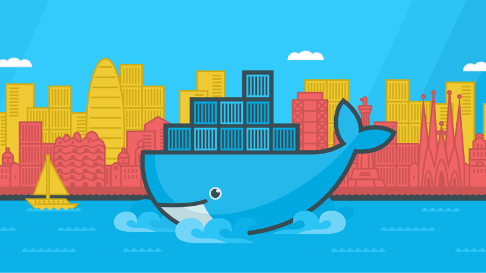

ADGSTUDIOS Python IDE
This IDE is a web-based tool powered by ACE code editor. This tool can be used to learn, build, run, test your python script. You can open the script from your localhost system and continue to build using this IDE. Code and output can be downloaded to localhost.
Launch App

GitHub Repo
DOCKER-ADGWEBOS
I decided to make a docker image which gives you full functionality of the container OS for users to work on. You get superuser powers! You can do whatever you want with the container. You got access to 1 Gigabit Ethernet. Have fun.
GitHub Repo